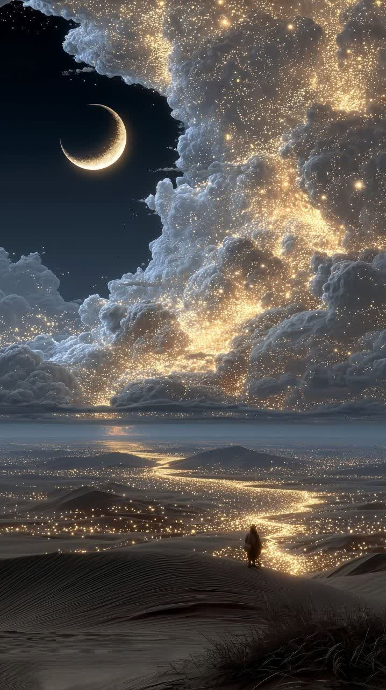
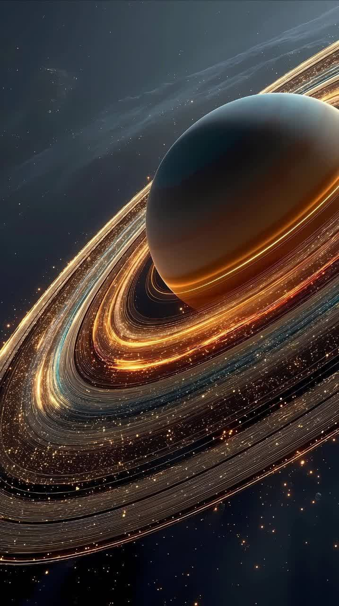
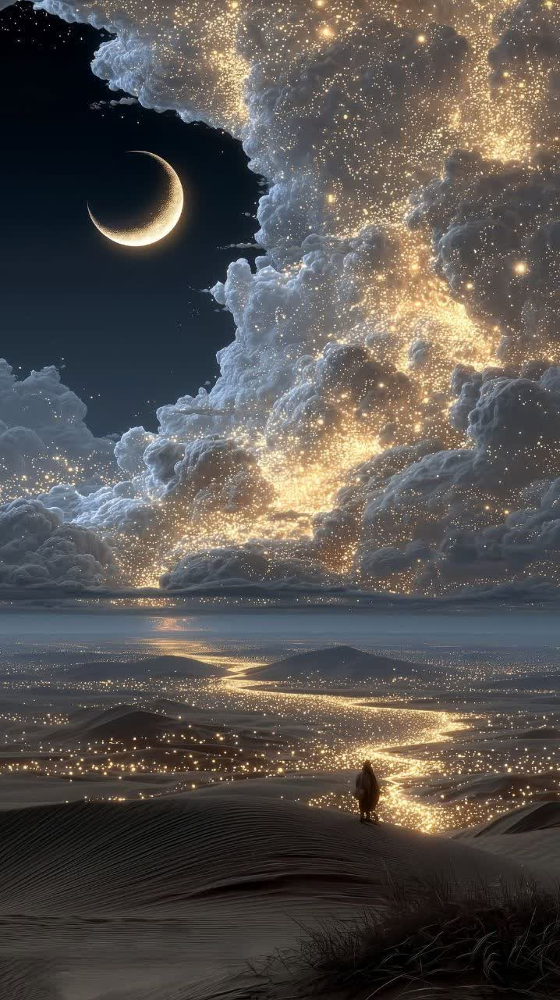
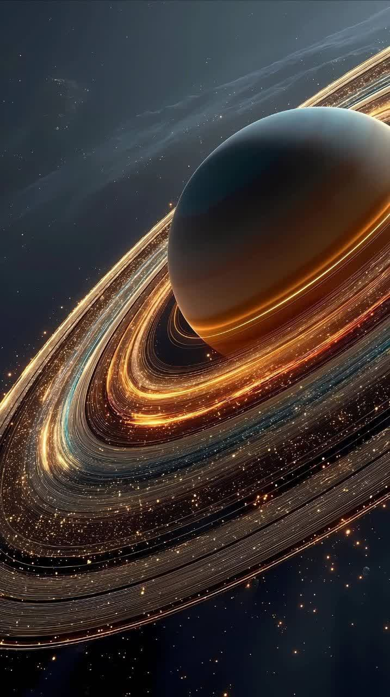

سلام
.روز خوبی داشته باشید
 



کهکشان یک مجموعه ای بزرگ از ستاره ها سیاره ها گاز و غبار است
که با نیروی گرانش کنار هم نگه داشته میشوند
خورشید و زمین داخل آن هستند
راه شیری
نام کهکشان ما است
کهکشان ها شکل های مختلفی دارند
تعداد آنها در جهان بسیار زیاد است و هرکدام ممکن است بیش از میلیارد ها ستاره
داشته باشند
| سیاره | جنس | اندازه |
|---|---|---|
| عطارد | سنگی | کوچک |
| زهره | سنگی | متوسط |
| زمین | سنگی | متوسط |
| مریخ | سنگی | کوچک |
| مشتری | گازی | بسیار بزرگ |
| زحل | گازی | بسیار بزرگ |
| اورانوس | یخی و گازی | بزرگ |
| نپتون | یخی و گازی | بزرگ |
حقایقی که مغزت سوت میکشه!